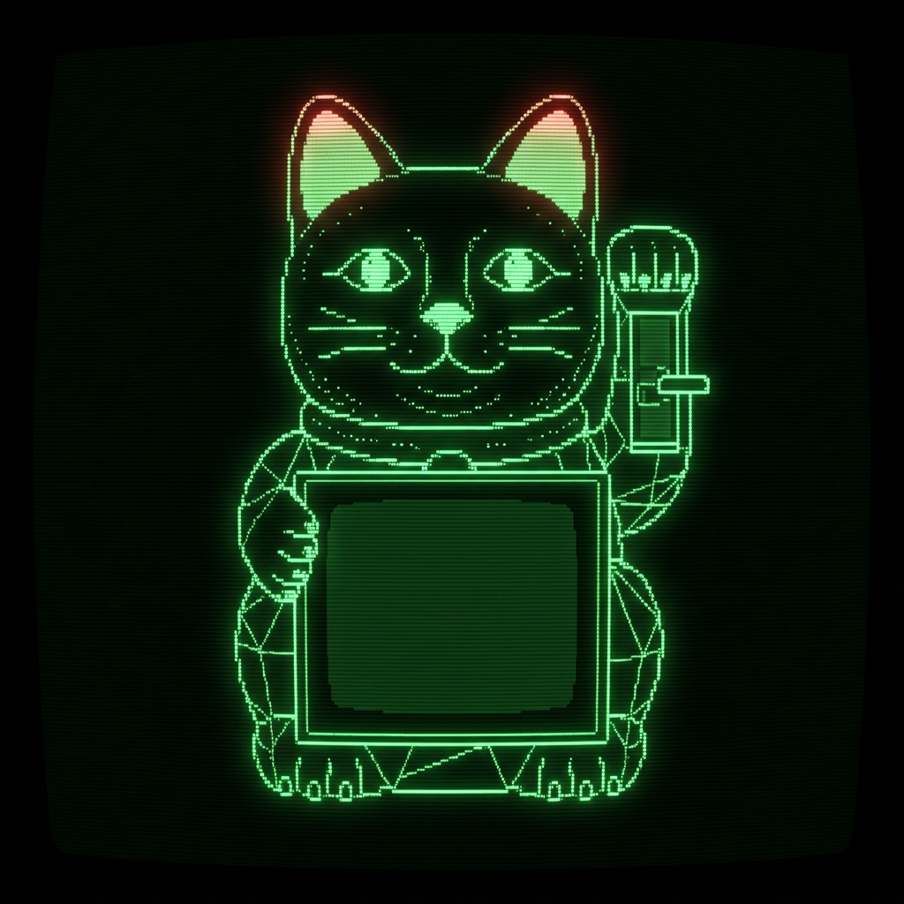

- USER -
USER: LAIN
ACCESS LVL: OBSERVER
NODE: Wired-01
DATE: ----/--/--
ACCESS LVL: OBSERVER
NODE: Wired-01
DATE: ----/--/--
- NETWORK STATUS -
PSYCHIC NETCONNECTED
SIGNAL72.6%
UPLINK128.0.0.1
DATA FLOWUNSTABLE
▶ ARCHIVE REPLAY: 2026.06.25 / M7.2 震度6強
- LOG STREAM -
[--:--:--] 接続を待機中…
- lain_network_map ▸ 台風観測 -
観測中…

PULL
DOWN▼
DOWN▼
PREDICTION.EXE✕
DOOMSDAY PROBABILITY:
--%
± 0.0% CONFIDENCE
✕
!! SYSTEM WARNING !!
⚠ システムは重大なリスクを検出しました
推奨される対応:
− ネットワークから切断
− 物理的に離れてください
− 思考をやめてください
OK
推奨される対応:
− ネットワークから切断
− 物理的に離れてください
− 思考をやめてください
- SCENARIO ANALYSIS -
待機中…--%
- CRITICAL ALERT -
コード: 0x0000
状態: 正常範囲
観測を継続しています。
状態: 正常範囲
観測を継続しています。
- OBSERVER FEED // 地球観測 -
世界はすでに終わっている
あなたはそれをまだ理解していない
観測は継続されています
あなたはそれをまだ理解していない
観測は継続されています